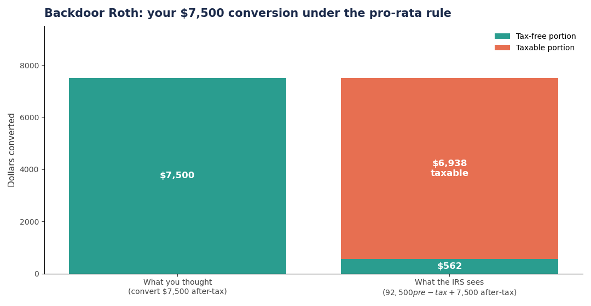
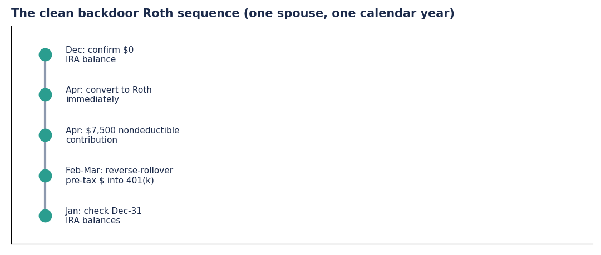
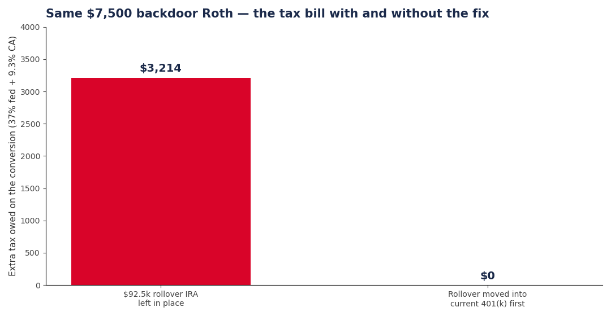

You earn too much to contribute to a Roth IRA directly — in 2026, direct contributions phase out between $242,000 and $252,000 of MAGI for married couples filing jointly ($153,000–$168,000 single). So you did the textbook move: contribute $7,500 to a traditional IRA, don't deduct it, convert it to Roth the next day. Tax-free. Except it wasn't — because you had a $92,500 rollover IRA sitting at the same brokerage, and the IRS doesn't let you pick which dollars convert.
How the backdoor is supposed to work
The backdoor Roth is two steps: (1) make a nondeductible traditional IRA contribution — there's no income limit on contributing, only on deducting; (2) convert that balance to a Roth IRA — there's no income limit on conversions. Done cleanly, with zero other IRA balances, the conversion is essentially tax-free. The IRS has acknowledged the strategy for years and never challenged it. (Motley Fool's 2026 backdoor walkthrough, Bogleheads Roth IRA wiki)
The catch is one word: aggregation. For the pro-rata rule, the IRS treats all your traditional, SEP, and SIMPLE IRAs as one account. You cannot convert "just the after-tax dollars."
The math that blows it up
Meet Maya. She has a $92,500 rollover IRA (all pre-tax, from an old 401(k)) and contributes $7,500 nondeductible for 2026. Her total IRA balance: $100,000. Her after-tax basis: $7,500. She converts $7,500 to Roth.
Tax-free fraction = basis ÷ total balance = $7,500 ÷ $100,000 = 7.5%.
- Tax-free: $7,500 × 7.5% = $562
- Taxable: $7,500 − $562 = $6,938
At 37% federal + 9.3% California, that "tax-free" conversion costs her $3,214 in extra tax. And the remaining $6,938 of basis stays trapped in the traditional IRA, complicating every future conversion. All because of Form 8606 math, which uses your IRA balance on December 31 of the conversion year — not the balance on conversion day.

Her spouse, who holds zero IRA balances anywhere, does the identical $7,500 backdoor the same week. His conversion: $0 tax. Same household, same week, $3,214 apart — the difference is entirely what sat in the account on December 31.
The fix: clear the decks before December 31
The standard repair is the reverse rollover: move the pre-tax IRA money into your current employer's 401(k) before year-end. 401(k)s aren't in the aggregation rule, so once the pre-tax dollars leave your IRAs, your December 31 IRA balance is $0 (or just your nondeductible contribution), and the conversion goes through clean.
The sequence that works:


One critical detail: only roll the pre-tax portion into the 401(k). After-tax basis can't go into a 401(k). If the account grew or shrank, do the conversion first or keep the basis amount in cash so you don't accidentally push nondeductible dollars into the plan.
What not to do
- Don't convert first and clean up later. The pro-rata calculation uses your December 31 balance. A mid-year conversion followed by a December rollover into an IRA still poisons the year.
- Don't forget SEP and SIMPLE IRAs. They count in the aggregation. Inherited IRAs don't — but verify with your tax preparer.
- Don't assume it's per-household. IRAs are individual. Your spouse's clean backdoor is unaffected by your messy one — but each of you files your own Form 8606.
- Don't skip Form 8606. The nondeductible contribution must be reported. No 8606, no basis on record, and the IRS treats the whole conversion as taxable.
- Don't leave $1.68 of interest behind. Brokerages often credit interest days after you empty the account. Check the traditional IRA in December and sweep any stragglers, or they'll trigger pro-rata math on next year's return.
- Don't pay the conversion tax from the IRA. If you're under 59½, withholding from the conversion itself is an early distribution — tax plus 10% penalty on that piece.
Takeaways
- The backdoor Roth is clean only if your December 31 IRA balance is $0 (besides the current contribution).
- The pro-rata tax-free fraction = your after-tax basis ÷ total IRA balances on Dec 31. With a six-figure rollover present, that fraction rounds to nearly zero.
- Reverse-rollover pre-tax IRA money into your 401(k) before year-end — that's the fix, and it's fully legal.
- 2026 limits: $7,500 IRA contribution ($8,600 at 50+), Roth phaseout $242k–$252k MFJ.
Further reading: Bogleheads Roth IRA wiki for the income tables, Motley Fool's 2026 backdoor Roth guide for the step-by-step, and the IRS 2026 COLA limits page for the official $7,500 / $8,600 figures.
Not tax, legal, or investment advice. Check your own situation and talk to a professional before acting.